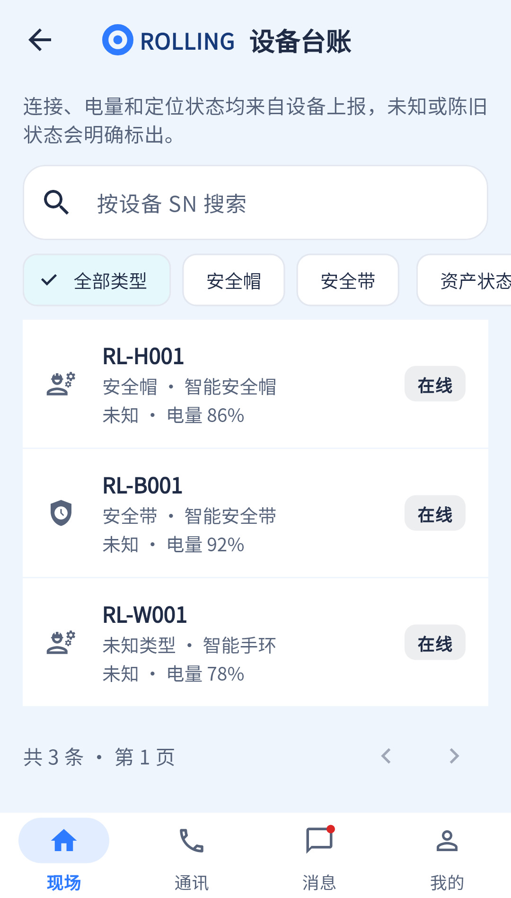

最关键功能差异是“资产状态”不等于“连接状态”；当前不能按在线/中断/未知筛选。
相同 · 已有基础
SN搜索、类型、设备状态、详情、刷新和分页已有。
不同 · UI与场景
当前是SN主标题的行列表和横向筛选，参考用设备照片、连接状态下拉与统计。
01 / 先看 UI
两图显示宽度统一；设计390px与当前360逻辑宽的画布不同。各图可独立滚动到底，点击“原图”放大。


使用既有组件截图；业务数据为示例。
02 / 逐项核对功能与小交互
入口：现场 → 设备 · 当前形态：子页面
| 编号 | 部位 | 设计要求 | 当前UI | 功能结论 | 下一步 |
|---|---|---|---|---|---|
| 10-01 | 顶部 | 设备台账插画头部 | 当前普通AppBar和长说明 | 已有展示，UI不同 | 统一头部和说明卡 |
| 10-02 | 搜索 | 编号或SN | 当前按SN请求 | 部分：已有sn；其他编号未独立支持 | 明确编号口径，必要时扩查询，保留清除/无结果 |
| 10-03 | 类型 | 全部类型含手表 | 当前显式只有全部/帽/带 | 部分：其他类型可在全部出现，缺专用筛选 | 接类型注册表，补手表及可扩展类型 |
| 10-04 | 连接筛选 | 全部连接状态 | 当前实际是资产状态菜单 | 缺失：online/connectionQuality未在列表契约开放 | 新增连接状态筛选，保留维修/在库/报废资产筛选 |
| 10-05 | 统计 | 设备总数/在线/需关注 | 当前只有分页total | 缺失：在线与需关注汇总 | 明确陈旧、未知、离线口径，接全量统计 |
| 10-06 | 列表 | 设备图、类型名、SN、连接色 | 当前通用图标、SN、型号、电量、资产状态 | 部分：字段更多但视觉不同，手表名称映射缺失 | 补图片和类型字典，同时保留电量资产信息 |
| 10-07 | 状态语义 | 绿在线/黄连接中断/灰未知 | 当前connectionLabel区分在线、数据陈旧、未知（online=0未单独显示离线） | 已有代码但色彩/措辞不同 | 建立统一语义表，不能把陈旧直接判违规 |
| 10-08 | 详情 | 点击设备 | 已有 | 已有代码：/devices/:id | 保留返回与筛选 |
| 10-09 | 底部说明 | 最近上报为准 | 当前顶部说明已有 | 已有展示 | 移位即可，不重复堆叠 |
| 10-10 | 分页 | 完整台账 | 已有服务端分页和刷新 | 已有代码 | 统计不得仅取当前页；验收最后一页 |
源码依据
queries/devices.dart:45,90,119,176；WearDeviceController.java:30
链接为随报告保存的带行号快照；行号对应分析时源码。以函数和字段共同定位，不能将请求代码视为执行成功证据。